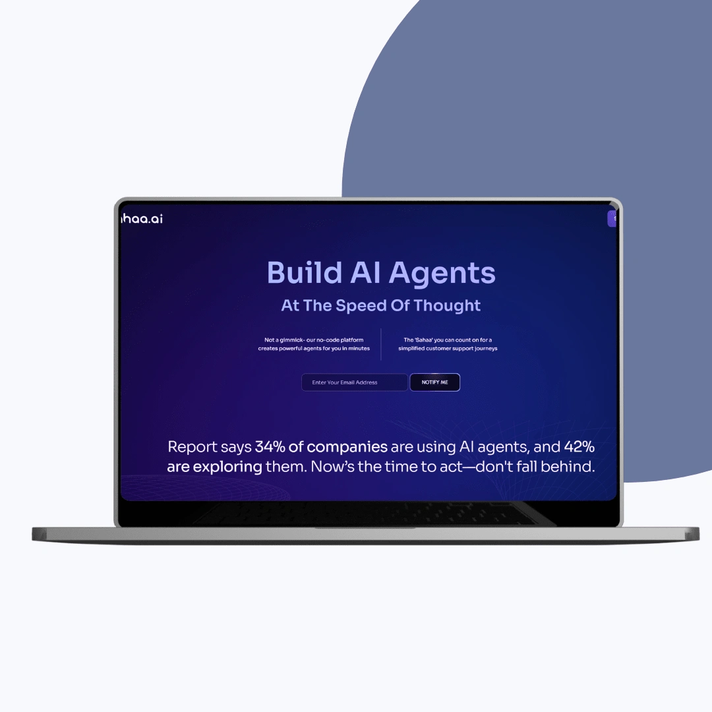
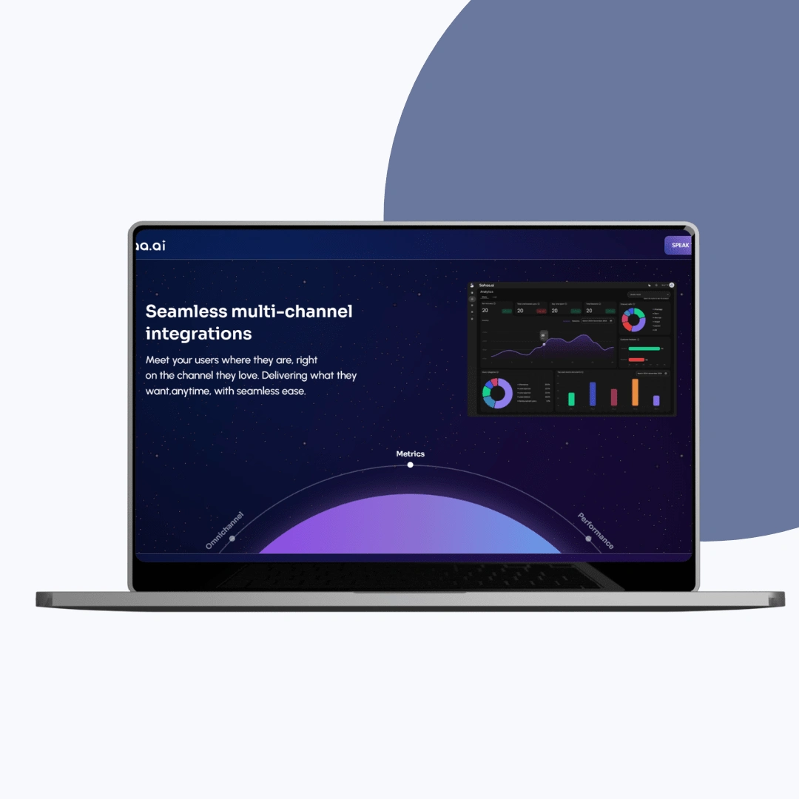
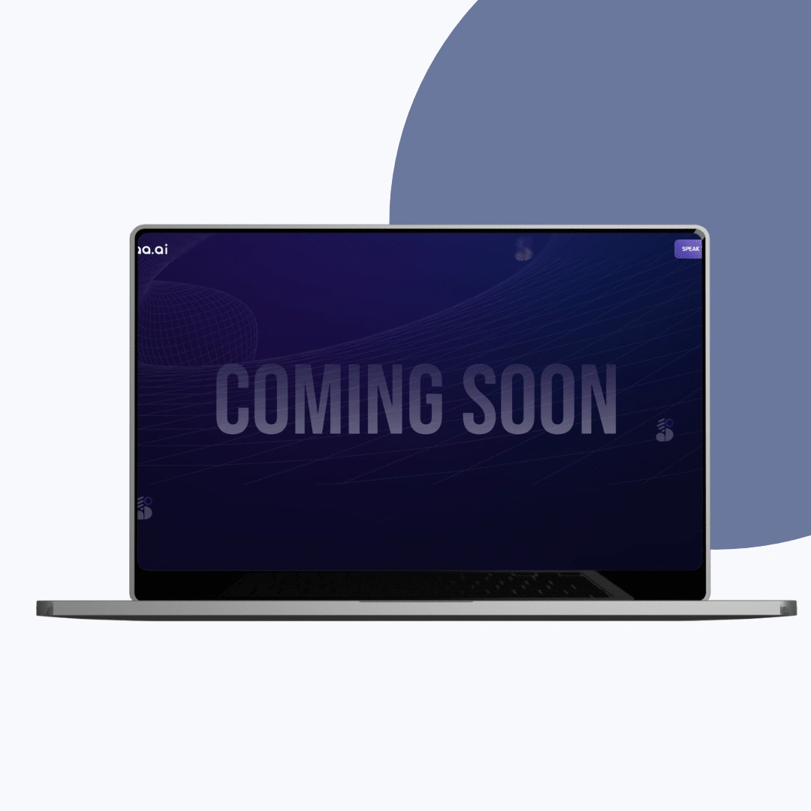
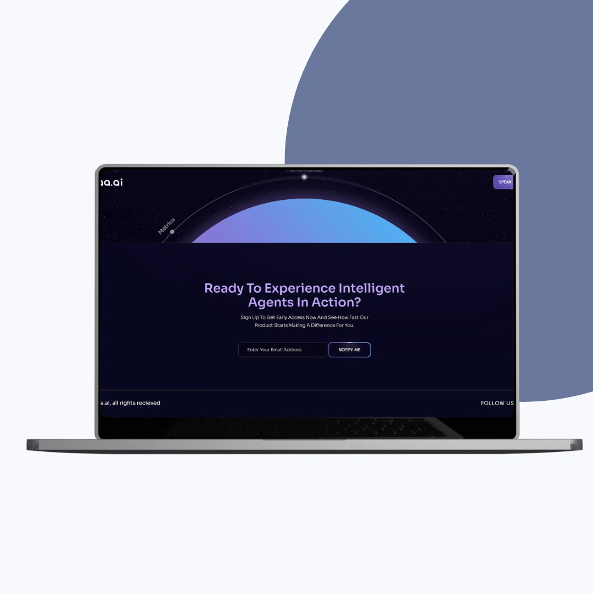

A single-page site that sells no-code AI agents without slowing down for the animation.
Sahaa.ai, a no-code AI customer-support platform, needed a site that showed its intelligence at a glance on an aggressive timeline. I designed the interface architecture, design system, and web experience for a single-page Webflow site, pairing brand-driven circular motion with performance engineering so the animations never cost load speed or responsiveness.

The brief
Sahaa.ai builds no-code AI agents that plug into existing communication systems to automate repetitive customer-support work, cut manual effort and errors, and surface real-time analytics. The company wanted a sleek, single-page website that made that intelligence obvious at a glance while staying fast and interactive. The catch was the timeline. Sahaa.ai needed brand-aligned circle animations and a polished, minimal interface delivered on an aggressive launch schedule, with no trade-off on visual or technical precision.


How we built it
We developed the site in Webflow with custom code, using Webflow's CMS and modular structure for scalability and a clean internal handover. The signature circular motion, meant to reflect the continuous, adaptive nature of AI, was engineered with GPU-friendly animations, lazy-loading, and smart triggers instead of heavy JavaScript libraries, plus fallback versions for older browsers and low-spec devices. A single scroll guides visitors from Sahaa.ai's mission through product benefits and integrations to a clear call to action, with compressed assets and minimized scripts holding performance steady the whole way down.

What shipped
The result is a launch-ready single-page site where custom circle animations convey brand innovation without overloading the DOM or hurting load time. Structure and content flow were tuned for smoother scrolling and stronger mobile responsiveness, and the Webflow architecture leaves Sahaa.ai a modular, scalable foundation their non-dev team can update and expand. As client Hari Prasanth put it, they've been highly impressed.